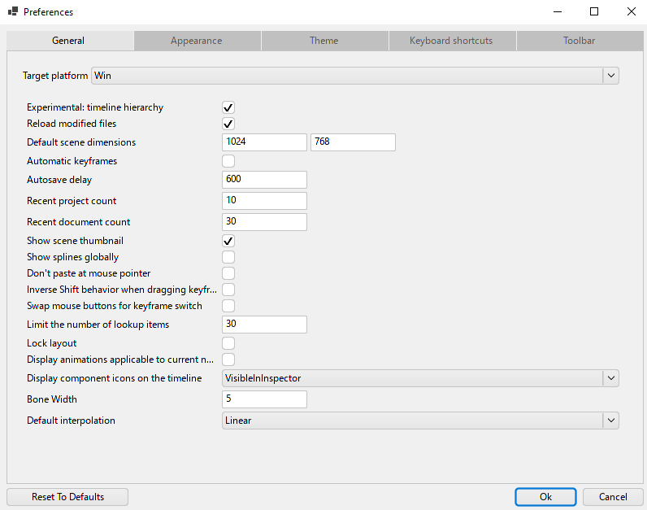
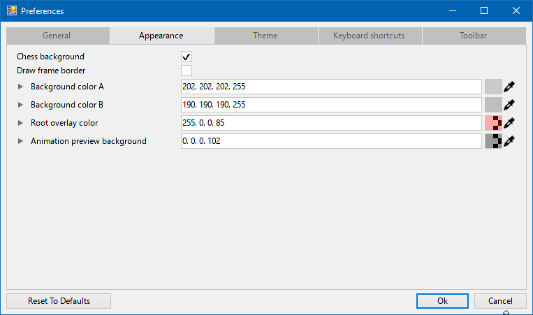
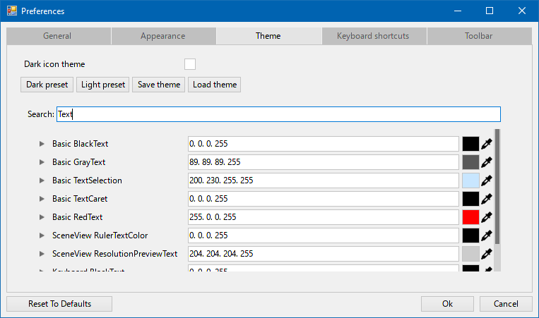
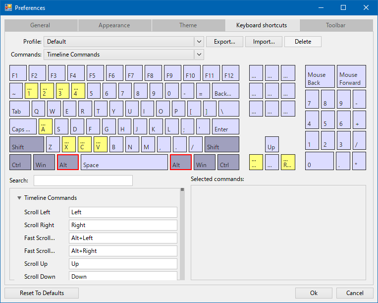
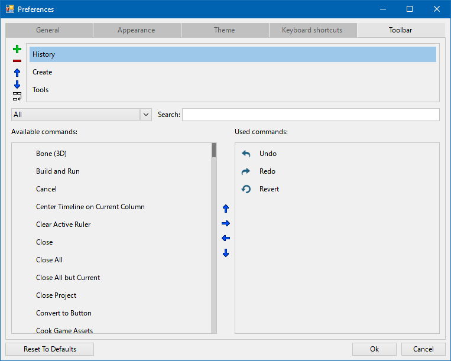

Настройки (Preferences)
Настройки редактора вызываются через File -> Preferences, либо использовав комбинацию клавиш Ctrl + P.
Окно настроек делится на несколько категорий:
General - основные настройки.

- Target platform - выбор платформы, с которой работаем.
- Reload modified files - перегружать ли измененные файлы по-умолчанию.
- Default scene dimensions - размеры сцены по-умолчанию.
- Automatic keyframes - выставлять ли ключи анимации при изменении пропертей.
- Animation mode - активировать ли триггеры при проигрывании анимации.
- Autosave delay - период сохранения сейвов.
- Stop animation on current frame - останавливать анимацию на текущем фрейме (вкл/выкл).
- Show scene thumbnail - показывать ли превью сцены на таймлайне.
- Don't paste at mouse pointer - отключить вставку на место курсора.
- Inverse Shift behavior when dragging keyframe - инвертировать поведение Shift при перетаскивании кейфреймов.
- Bone Width - настроить ширину кости.
- Default interpolation - выбор способа интерполяции по-умолчанию.
Appearance - настройки внешнего вида.

- Chess background - использовать ли шахматки для фона.
- Background color A - цвет бэкграунда А.
- Background color B - цвет бэкграунда Б.
- Root overlay color - цвет границы root-сцены.
- Animation preview background - цвет фона для плеера анимаций.
Theme - настройки цветовой схемы.

- Dark icon theme - использовать ли тёмные иконки.
- Dark/Light preset - захардкоженные дефолтные темы (тёмные/светлые).
- Save theme - сохранить тему.
- Load theme - загрузить тему.
- Search - поиск нужного проперти для изменения цвета.
Keyboard shortcuts - настройки хоткеев.

- Profile - текущий пресет (профиль) настроек клавиатуры.
- Commands - список команд, доступных для биндов.
- Export/Import/Delete - управление профилем.
- Search - поиск по командам.
- Reset To Defaults - сбросить настройки по-умолчанию.
Toolbar - настройка тулбаров.

- Search - поиск необходимой команды.
- Available commands - список доступных команд.
- Used commands - список использованных команд.